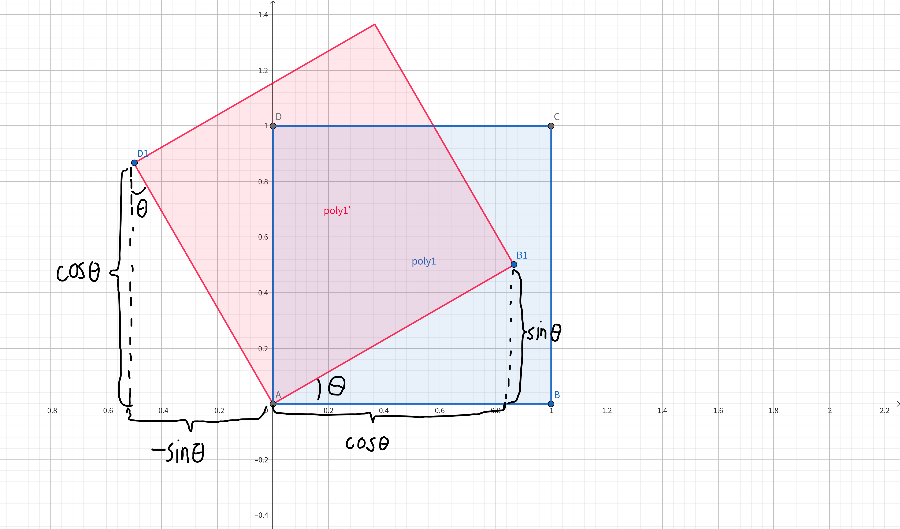
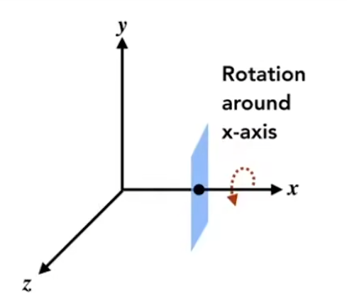
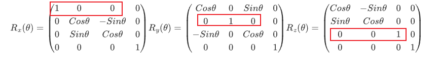
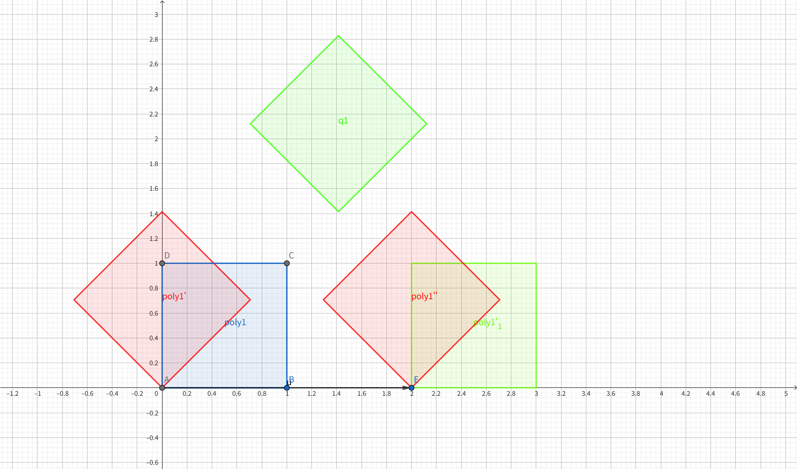
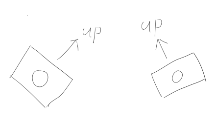
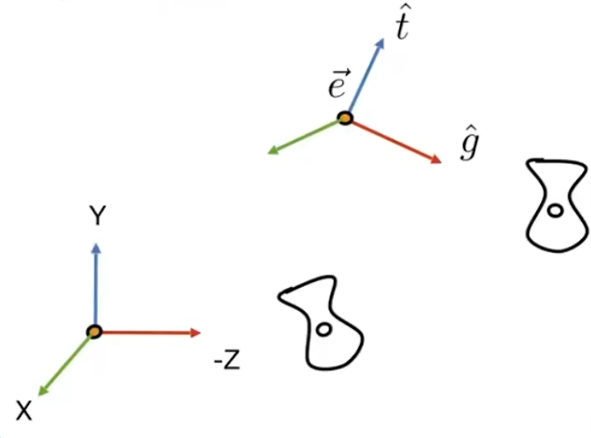

挖坑施工中（MVP矩阵过于基础和深刻，需要花很长时间将他完善，已完成视图矩阵）——MVP矩阵是渲染中基础中的基础，很多进阶效果都需要对MVP矩阵有深刻的理解，下文将对MVP矩阵进行详细的讲解
1.MVP矩阵概述
模型本质是一堆点坐标的集合，各点的坐标位置就是建模软件中模型的各个顶点坐标，这个阶段的坐标被成为模型空间坐标或者对象空间（Object Space）。我们要做的就是将模型顶点变换到屏幕空间。它将会经历以下过程： $$ \text{模型空间} \xrightarrow{Model（模型矩阵）} \text{世界空间} \xrightarrow{\text{View（观察矩阵）}} \text{视空间} \xrightarrow{\text{Projection（投影矩阵）}} \text{裁剪空间} $$
齐次坐标
MVP矩阵全部用齐次坐标表示，为了统一纺射变换（平移）与线性变换（旋转和缩放）在图形学中一般使用齐次坐标来表达，我们在原本的3维矩阵中多加一个维度变成4x4的矩阵，这样平移矩阵就也可以像缩放和旋转矩阵一样使用了，矩阵中第四列就是表示的平移量。引入齐次坐标后，我们可以通过第四个分量：w分量，来区分顶点和向量，一般顶点表示为（x，y，z，1）而向量则表示为（x，y，z，0）。这样表示有以下好处：
- 点+向量=点：当顶点和向量相加时表示的是这个顶点向向量方向移动一段距离：对于任意顶点P=（x，y，z，1）我们与任意向量$\vec{a_1}$=（a，b，c，0）相加所得结果P’=(x+a，y+b，z+c，1+0)，所得结果还是一个顶点。
- 向量+向量=向量：当向量与向量相加的时候得到一个新向量，它表示这两个向量的叠加：我们有$\vec{a_1}=（a_1，b_1，c_1，0）$与$\vec{a_2}=（a_2，b_2，c_2，0）$相加所得结果$\vec{a_3}=（a_1+a_2，b_1+b_2，c_1+c_2，0）$它表示的是一个新的向量。
- 点-点=向量：A点减B点等于B指向A的一个向量，这个向量的模长就是两点之间的距离：对于点P1 = （X1, Y1, Z1, 1），P2 = （X2, Y2, Z2, 1）当P1 − P2时得到结果a⃗ = (X1 − X2, Y1 − Y2, Z1 − Z2, 0)
- 点+点=两点中点：当点与点相加时表示的是这两个点的中点：我们需要引入一个规定，对于所有大于w值大于1的量，我们需要除以w本身才表示原先要表示的量，也就是(x，y，z，w)⇒(x/w，y/w，z/w，1)。对于点P1 = （x1，y1，z1，1）与P2 = （x2，y2，z2，1），P1 + P2 = (x1 + x2，y1 + y2，z1 + z2，2)实际上表示的值是$（\frac{x_1+x_2}{2}，\frac{y_1+y_2}{2}，\frac{z_1+z_2}{2}，1）$
2.M矩阵—模型矩阵
模型矩阵是为了将模型从模型空间变换到世界空间，可以理解为就是将一个模型拖到untiy的场景中，此时世界空间原点就是unity场景的原点，我们就是要求得模型各个顶点与这个unity场景的原点之间的关系。其实无非就是以下几点：缩放，旋转，平移。
2.1缩放矩阵
对于任意顶点P=（x，y，z），我们进行缩放Sx，Sy，Sz只需要将x，y，z各点乘以对应的缩放值就可以了：Sm = (x × Sx, y × Sy, z × Sz)，这里Sx，Sy，Sz所对应的就是unity中Transform的缩放的XYZ值。
写成矩阵形式，缩放矩阵： $$ S_m=\begin{pmatrix} S_x & 0 & 0 &0 \\ 0 & S_y & 0 &0\\ 0 & 0 & S_z &0\\ 0&0&0&1 \end{pmatrix} \begin{pmatrix} x \\ y \\ z \\ 1 \end{pmatrix} $$ ## 2.2旋转矩阵
对于旋转矩阵的推导我们可以先考虑二维空间的情况。
如图所示，我们要将图形进行如下的旋转。（蓝色方块→红色方块）

将蓝色方块旋转θ角，点B变换到B1点，点D变换到D1点，由非常简单的勾股定理我们可得：B1 = (Sinθ, Cosθ)，D1 = (−Sinθ, Cosθ)。
我们要推导出旋转矩阵，这个矩阵对空间中任意点适用，那么对于点B也同样是适用的，点B的坐标为B = (1, 0)，那么B1与B的关系写成矩阵的形式就为： $$ B_1 = \begin{pmatrix} a&b\\ c&d\\ \end{pmatrix} B \Rightarrow \begin{pmatrix} Cos\theta \\ Sin\theta\\ \end{pmatrix} = \begin{pmatrix} a&b\\ c&d\\ \end{pmatrix} \begin{pmatrix} 1 \\ 0 \\ \end{pmatrix} $$ 我们求得只要求出abcd也就得到了二维空间下的旋转矩阵。由上面的矩阵我们可以得知：Cosθ = a ⋅ 1 + b ⋅ 0 = a而Sinθ = c ⋅ 1 + d ⋅ 0 = c，由此我们求得a = Cosθ，c = Sinθ。
同理，我们可以利用D与D1的关系求得b与d的值，他们分别为：b = −Sinθ，d = Cosθ。
由此我们就得到了二维空间下的旋转矩阵： $$ R_\theta = \begin{pmatrix} Cos\theta&-Sin\theta\\ Sin\theta&Cos\theta\\ \end{pmatrix} $$ 对于三维空间我们有些许不同，如下图所示，对于三维空间我们旋转的方向自由了很多，可以有各种各样的旋转方式。而求得可以实现任意方向旋转的旋转矩阵是非常复杂的。我们姑且可以用一个取巧的方式：先学会各个轴的旋转矩阵，再用各轴旋转来组合成为任意方向的旋转矩阵。

这里先直接给出各个轴的旋转矩阵 $$ R_x(\theta) = \begin{pmatrix} 1 & 0 & 0 & 0 \\ 0 & \cos\theta & -\sin\theta & 0 \\ 0 & \sin\theta & \cos\theta & 0 \\ 0 & 0 & 0 & 1 \end{pmatrix} \quad R_y(\theta) = \begin{pmatrix} \cos\theta & 0 & \sin\theta & 0 \\ 0 & 1 & 0 & 0 \\ -\sin\theta & 0 & \cos\theta & 0 \\ 0 & 0 & 0 & 1 \end{pmatrix} \quad R_z(\theta) = \begin{pmatrix} \cos\theta & -\sin\theta & 0 & 0 \\ \sin\theta & \cos\theta & 0 & 0 \\ 0 & 0 & 1 & 0 \\ 0 & 0 & 0 & 1 \end{pmatrix} $$ 我们可以这样理解三维的各轴矩阵：首先，对于各轴的旋转，所对应轴的顶点是没有变化的，所以三个矩阵对应的轴值不变：

而内部，其实就是二维的旋转矩阵，只不过对于Y轴来说情况有点特殊，根据右手螺旋定则：z = x × y，x = y × z，而对于y则有些特殊，y = z × x而不是y = x × z所以y是反过来的，中间的两个sin值对于传统的二维矩阵来说是取负的
得到各轴的旋转方式之后，我们就可以将旋转进行组合，得到任意方向的旋转Rm(α, β, γ) = Rx(α)Ry(β)Rz(γ)用于旋转的四个角就是欧拉角。这三个欧拉角所对应的就是unity中Transform的旋转的XYZ值。
2.3平移矩阵
平移矩阵最为简单，前面说过，为了统一平移和旋转、缩放矩阵使用齐次坐标，而齐次坐标的最后一列所对应的就是平移矩阵。我们直接给出平移矩阵： $$ T_m=\begin{pmatrix} 1 & 0 & 0 &T_x \\ 0 & 1 & 0 &T_y\\ 0 & 0 & 1 &T_z\\ 0&0&0&1 \end{pmatrix} $$ Tx，Ty，Tz所对应的就是unity中Transform的平移的XYZ值。我们直接将Tx，Ty，Tz分别与点坐标的XYZ相加就好。
需要注意的是，我们在进行所有变换的时候一定要注意顺序，一定要按照缩放—旋转—平移的顺序来做，否则的话会得到不正确的结果。先旋转再平移和先平移再旋转为例：

（’与“分别表示第一次变换和第二次变换）
蓝色为原图形，红色是先旋转再平移后的结果，而绿色则是先平移再旋转的结果，可以看到：绿色的图形先平移之后还以原点为中心进行旋转导致我们得到了错误的结果。
最后，我们将组合一下模型矩阵：Mm = TmRmSm
3.V矩阵—视图矩阵
V矩阵的作用是将世界空间中的物体变换到视空间，也就是以摄象机为原点的空间。这里的变换就不涉及缩放，只有平移和旋转操作。接下来是对V矩阵的推导，使用Games101中的办法。
首先我们需要定义一个摄象机就需要如下属性：位置、朝向、向上方向。位置和朝向很好理解，不同位置，不同朝向的摄象机拍出的画面肯定是不同的，而向上方向则是来确定摄象机拍摄的角度。如下图所示：

有了摄象机我们就可以拍摄世界空间中的物体了，我们可以将摄象机摆在世界空间的任意位置，然后旋转任意方向来拍摄，然后通过位置和旋转信息来计算V矩阵。但是这样计算比较麻烦，我们可以这样想，如果我们把摄象机摆一个标准位置：既世界空间的原点，镜头朝向-Z，向上方向是Y轴方向，然后移动整个世界空间的物体，让它们同样按照刚才摄象机移动到标准位置的方式移动，这样实际上摄象机与整个场景中的物体相对运动是不变的，拍出来的效果是一样的。所以我们直接求得摄象机向标准位置移动的矩阵，也就顺便求出了整个V矩阵。
如图所示：我们要将右面的坐标移动到左下面的标准坐标，其中向量e⃗是相机移动的方向，向量ĝ与t̂分别表示摄象机的朝向与向上方向

第一步很简单，就是直接将摄象机移动到原点，我们只需要将摄象机移动的方向取反就好了： $$ T_v= \begin{pmatrix} 1 & 0 & 0 &-x_e \\ 0 & 1 & 0 &-y_e\\ 0 & 0 & 1 &-z_e\\ 0&0&0&1 \end{pmatrix} $$ 接下来我们要做的是将ĝ旋转到世界空间-z轴方向，将t̂旋转到世界空间Y轴方向。但是这样做比较困难，我们可以先求从-z方向变换到ĝ方向，从y方向变换到t̂方向，x轴变换到ĝ × t̂方向的矩阵，易得： $$ \begin{pmatrix} x_{\hat{g}\times\hat{t}} & x_t & x_{-g} & 0\\ y_{\hat{g}\times\hat{t}} & y_t & y_{-g} & 0\\ z_{\hat{g}\times\hat{t}} & z_t & z_{-g} & 0\\ 0&0&0&1 \end{pmatrix} $$ 我们只需要将这个矩阵求个逆变换就可以得到我们需要的矩阵，而旋转矩阵是个正交矩阵，他的转置就等于逆变换，所以我们转置即可得到v矩阵的旋转矩阵： $$ R_v= \begin{pmatrix} x_{\hat{g}\times\hat{t}}&y_{\hat{g}\times\hat{t}}&z_{\hat{g}\times\hat{t}}&0\\ x_t&y_t&z_t&0\\ x_{-g}&y_{-g}&z_{-g}&0\\ 0&0&0&1 \end{pmatrix} $$
这样我们就得到了V矩阵：Mv = RvTv，也可以将两个矩阵写在一起（当平移矩阵和其他矩阵写在一起的时候视作先进行平移矩阵，在进行其他矩阵）： $$ M_v= \begin{pmatrix} x_{\hat{g}\times\hat{t}}&y_{\hat{g}\times\hat{t}}&z_{\hat{g}\times\hat{t}}&-x_e\\ x_t&y_t&z_t&-y_e\\ x_{-g}&y_{-g}&z_{-g}&-z_e\\ 0&0&0&1 \end{pmatrix} $$ 观察这个矩阵我们也可以拿到一些信息：他的第二行前三个数就是摄象机的向上方向，第三行三个数就是摄象机朝向，最后一列是摄象机的世界空间坐标的反向，我们就可以通过访问视图矩阵来拿到一些信息来做一些效果。此外，视空间顶点的z值就是这点的深度值，我们可以通过这个方式来计算深度。
4.P矩阵—投影矩阵
在很长一段时间里我都分不清投影矩阵之间的步骤，什么NDC空间、齐次裁剪空间之类的，还会有透视除法之类关系。第一次接触MVP矩阵是跟着闫令其老师的《Games101》，貌似他讲到投影矩阵的时候没有提到这些东西，但是不论是在各类文章中还是在unity引擎中都有频繁提到，其中还涉及到各种深度的问题，这次我将将他一次性理顺。
投影矩阵分为两种，分别是透视投影和正交投影。透视投影模仿的是现实世界中人的眼睛